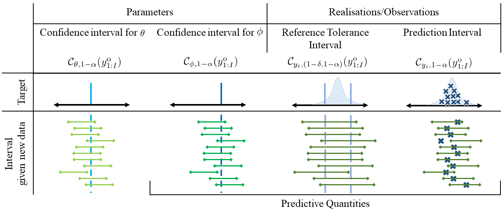

Motivation
Here we cover the motivation / general idea of the PWA workflow as seen in [1]. We also introduce the idea of reference tolerance sets for predictions of realisations/observations within the workflow as formally introduced in my Masters thesis.
Why Use The PWA Workflow: Types of Intervals and Sets
When conducting scientific research, it is important that the methods used have some degree of certainty regarding their accuracy. For example, imagine modelling the growth of a tumour. In particular, it may be of interest to estimate when (or even if) it would reach a certain critical mass, thus requiring an operation, given a set of initial observations of its size. A physician would need to have some degree of certainty in the method that is used in order to make a well-informed decision on when or if surgery would be required for this patient. This motivates using methods with properties that consistently enable a good understanding of the uncertainty in a given problem.
The PWA workflow seeks to solve this by providing intervals and sets with an associated confidence level [1]. A confidence level is a frequentist property, which means that when these sets are formed for repeated experiments, they are expected to contain the true values a particular proportion (confidence level) of the time [2]. For example, consider if our physician had to estimate the timing of when the tumour reached a certain critical mass for many patients, using a method that provides an interval for this timing with a 99% confidence level. Given this confidence level, we would expect the interval for the time to reach critical mass to contain the true time for approximately 99% of the assessed patients. Forming the interval at this confidence level thus provides a meaningful summary of information that can be used to make well-informed decisions, such as when or if to perform surgery.
Within the PWA workflow, there are several types of intervals, as seen in the figure below, each with slightly different properties and goals [3], [4]. This figure is used for the remainder of this section. In general, the corresponding set for each interval is all the values contained within the interval (inclusive). Our confidence sets are for parameters (both $\theta$ and the data distribution parameters $\phi$). Our reference tolerance sets and prediction sets are instead for future observations. All of these sets, except the confidence set for $\theta$, are sets for predictive quantities. The notation in this section will be explained in Formulation.

The above figure corresponds to the case where we apply the PWA workflow to a scalar model corrupted by Gaussian noise. Here we let $\theta^\textrm{o}=1$ and let this value be known. We set $z(\theta^M) = 1.5\theta^M$. This means that the mapping onto data distribution parameters is given by $\phi(\theta) = (z(\theta^M), \, \theta^\textrm{o}) = (1.5 \times \theta^M, \, \theta^\textrm{o})$.
For Parameters
We observe a set of observations from the model which we then use to estimate the single parameter $\theta^M$. The estimation of this single parameter uses a $1-\alpha$ confidence interval, meaning that under repeated sampling of observations, $1-\alpha$ of the intervals found using the estimation process are expected to contain the true value of $\theta^M$ [2]. Similarly, the confidence set for this single parameter includes all the values inside this interval (assuming the log-likelihood function is uni-modal).
We then propagate the confidence interval for $\theta$ into a confidence interval for $\phi$ using the mapping $\phi(\theta)$. Here, $\phi$ is an estimate of the underlying data distribution for observations. If we then wish to predict the true value of the model trajectory, $z(\theta)$, we consider the confidence interval for the first data distribution parameter (note, the second data distribution parameter is regarded as known). This is a confidence interval for a predictive quantity; it has the same interpretation as the confidence interval for the parameter.
A practical example of where a parameter confidence interval could be of interest is modelling long-term coral coverage on a particular reef with little coverage after a disturbance [5]. In this example, one of the model parameters used is the long-time carrying capacity density. Forming a confidence interval for this parameter would thus provide an estimate of the uncertainty associated with this long-term coral coverage, e.g. it's likely to be between 75% and 83%.
Similarly, we might be interested in how the coverage, on average, increases towards the long-time carrying capacity. Our confidence set for $\phi(\theta)$ allows us to have a corresponding confidence set for the model trajectory, $z(\theta)$, which is taken to be the mean change in coral coverage over time. This then allows the estimation and visualisation of how long the average coverage will take to reach particular levels.
Predicting Observations
Now that we have a confidence interval for the only unknown data distribution parameter we can use this interval in conjunction with the known parameter to make predictions for observations. The approach we introduce here is to form a $(1-\delta, 1-\alpha)$ reference tolerance interval for the $1-\delta$ population reference interval. This means that under repeated sampling of observations, at least $1-\alpha$ of the reference tolerance intervals we form using the prediction process are expected to contain the interval containing the $1-\delta$ highest density region for new observations, as determined by the time point. As $\theta^\textrm{o}$ is known and set to its true value in this example, we would expect the coverage of the reference tolerance interval to be the same as the coverage of the confidence interval for the model trajectory.
If, instead, we wish to predict single future observations as a one-off task, then we can form prediction intervals [1]. In contrast to the reference tolerance interval, which seeks to trap the $1-\delta$ population reference interval, a prediction interval seeks only to trap a single future observation at the desired coverage rate. This means that under repeated sampling of observations, at least $1-\alpha$ of the prediction intervals formed are expected to contain a single new observation (where each set of observations is only used to predict one new observation). Resultantly, they are not necessarily as wide or required to be as wide as a reference tolerance interval [4].
Returning to the coral coverage example, the reference tolerance set describes the set of noisy observations we might take of the coral coverage over time. The considered reef area, as well as the cost of conducting these observations, is quite large [5], and hence, there is an associated level of variability in a given set of observations. The range of observations that we most expect to see as time progresses is given by the $1-\delta$ population reference set. Forming the reference tolerance set, thus, allows us to estimate the location of the population reference set with a specified level of confidence. We would expect $1-\alpha$ of reference tolerance sets formed using repeated sets of observations to contain the most likely set of observations over time, the population reference set.
Similarly, if we wish to predict a single observation of the coral area coverage at some future time point, such as in one year, we would form a prediction interval with confidence level $1-\alpha$. This means that if we were to go back many times and repeat our observations of coral coverage, which are used to form the prediction interval for the coverage in one year, we expect $1-\alpha$ of these intervals to contain the observation made in one year.